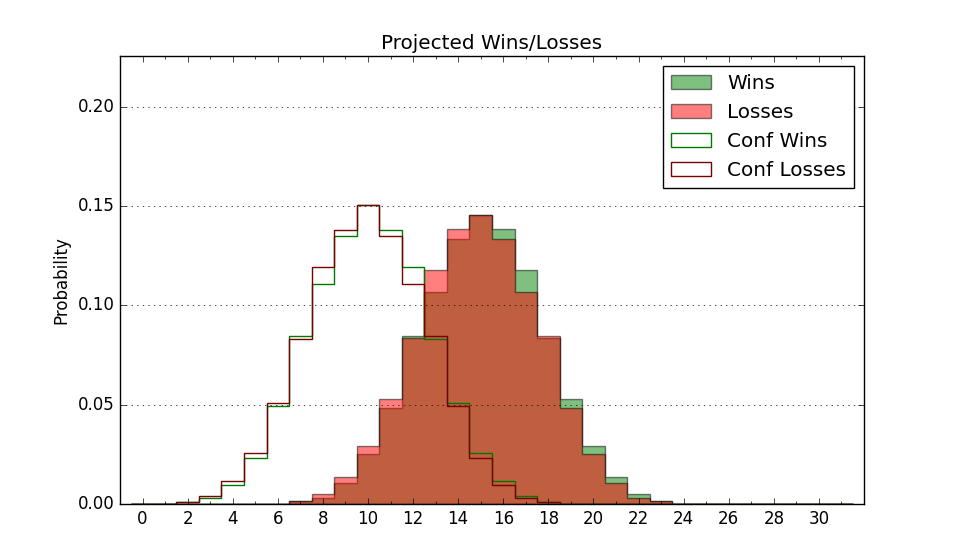

| Home | Game Probabilities | Conferences | Preseason Predictions | Odds Charts | NCAA Tournament |
| City: | Fullerton, California | |
| Conference: | Big West (2nd)
| |
| Record: | 12-5 (Conf) 16-10 (Overall) | |
| Ratings: | Comp.: -0.6 (174th) Net: -0.6 (174th) Off: 103.6 (160th) Def: 104.2 (205th) SoR: 0.0 (143rd) |
| Remaining | ||||||
|---|---|---|---|---|---|---|
| Date | Opponent | Win Prob | Pred. | |||
| Previous | Game Score | |||||
| Date | Opponent | Win Prob | Result | Off | Def | Net |
| 11/9 | @Santa Clara (78) | 13.7% | L 77-84 | 15.7 | -12.6 | 3.1 |
| 11/11 | @San Jose St. (305) | 65.2% | L 76-78 | 8.7 | -16.3 | -7.6 |
| 11/16 | George Washington (232) | 74.6% | W 74-59 | 7.1 | 8.5 | 15.6 |
| 11/19 | @San Diego (230) | 45.7% | W 57-55 | -9.6 | 15.6 | 6.0 |
| 11/23 | (N) UT Rio Grande Valley (304) | 77.6% | L 67-72 | -21.5 | 0.7 | -20.8 |
| 11/24 | @Northern Arizona (340) | 77.8% | W 73-56 | 8.3 | 6.6 | 14.9 |
| 11/29 | Wyoming (55) | 29.9% | L 66-79 | 1.9 | -15.6 | -13.6 |
| 12/4 | Pacific (295) | 84.8% | W 66-57 | -10.2 | 9.6 | -0.6 |
| 12/8 | @San Diego St. (35) | 8.4% | L 56-66 | 3.2 | 8.2 | 11.4 |
| 12/30 | @Cal St. Bakersfield (280) | 59.8% | W 73-67 | -1.3 | 3.5 | 2.2 |
| 1/13 | Cal St. Northridge (325) | 89.9% | W 79-64 | -0.9 | -1.8 | -2.7 |
| 1/15 | UC Santa Barbara (130) | 56.3% | W 79-73 | 4.5 | -2.4 | 2.1 |
| 1/20 | @UC Irvine (119) | 24.6% | W 65-63 | 19.1 | -2.6 | 16.6 |
| 1/22 | UC San Diego (270) | 81.7% | W 83-80 | 8.0 | -20.7 | -12.7 |
| 1/27 | @UC Davis (222) | 44.5% | W 74-58 | 7.4 | 16.4 | 23.9 |
| 1/29 | @UC Riverside (155) | 31.9% | L 54-67 | -19.9 | 6.6 | -13.3 |
| 2/3 | Cal Poly (306) | 86.6% | W 61-50 | -18.3 | 13.2 | -5.1 |
| 2/5 | Cal St. Bakersfield (280) | 83.5% | W 75-61 | -2.3 | 7.6 | 5.4 |
| 2/8 | @Long Beach St. (168) | 33.8% | L 61-71 | -11.5 | 4.7 | -6.8 |
| 2/12 | @Hawaii (166) | 33.7% | L 55-72 | -18.1 | 2.1 | -15.9 |
| 2/17 | @UC Santa Barbara (130) | 27.5% | W 67-58 | 15.0 | 11.3 | 26.3 |
| 2/19 | @Cal St. Northridge (325) | 72.4% | W 81-73 | 20.5 | -19.0 | 1.5 |
| 2/24 | UC Irvine (119) | 52.6% | W 66-64 | 4.7 | -2.9 | 1.7 |
| 2/26 | @UC San Diego (270) | 56.7% | L 76-81 | 3.5 | -11.8 | -8.3 |
| 3/3 | UC Riverside (155) | 61.5% | L 72-75 | 7.9 | -23.6 | -15.7 |
| 3/5 | UC Davis (222) | 73.2% | W 62-59 | -15.6 | 12.2 | -3.4 |
| Stats & Trends | |||||
|---|---|---|---|---|---|
| Current | Day | Week | Month | Season | |
| Composite | -0.6 | +0.0 | -1.1 | -1.3 | +0.7 |
| Comp Rank | 174 | -- | -14 | -17 | +44 |
| Net Efficiency | -0.6 | +0.0 | -1.1 | -1.5 | -- |
| Net Rank | 174 | -- | -14 | -25 | -- |
| Off Efficiency | 103.6 | +0.0 | -0.7 | -0.7 | -- |
| Off Rank | 160 | -1 | -15 | -24 | -- |
| Def Efficiency | 104.2 | +0.0 | -0.4 | -0.9 | -- |
| Def Rank | 205 | -1 | -9 | -14 | -- |
| SoS Rank | 240 | +2 | -14 | +11 | -- |
| Exp. Wins | 16.0 | -- | -0.4 | -0.0 | +2.9 |
| Exp. Conf Wins | 12.0 | -- | -0.4 | -0.0 | +3.1 |
| Conf Champ Prob | 0.0 | -- | -25.4 | -36.5 | -1.5 |

| Advanced Stats | ||
|---|---|---|
| Stat | Value | Rank |
| Off Eff FG % | 0.496 | 195 |
| Off Ast Ratio | 0.124 | 284 |
| Off ORB% | 0.291 | 134 |
| Off TO Rate | 0.172 | 241 |
| Off FT Ratio | 0.370 | 32 |
| Def Eff FG % | 0.521 | 251 |
| Def Ast Ratio | 0.158 | 306 |
| Def ORB% | 0.289 | 214 |
| Def TO Rate | 0.166 | 148 |
| Def FT Ratio | 0.256 | 60 |